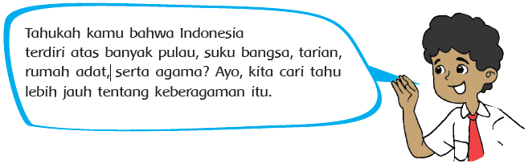
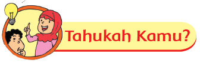
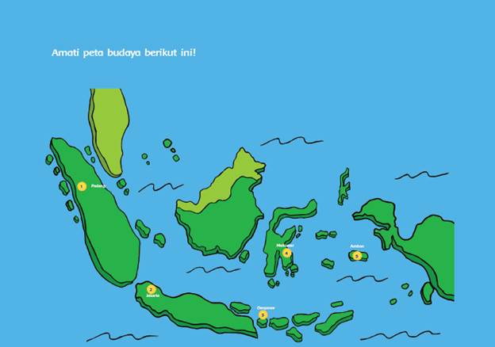
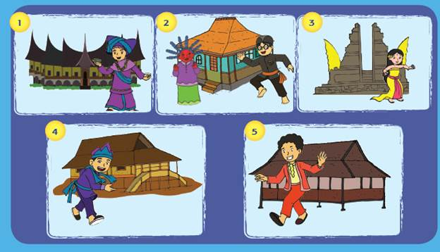
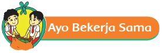
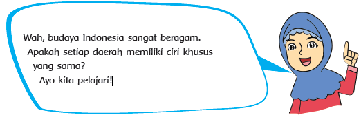

About
Menu
Hasyim Asyari
1110023 / TI 2.4
Konsentrasi Teknik Informatika
JP VEDC - STTAR
Malang
2013
Tema 1. Indahnya Kebersamaan
Mari belajar keaneragaman suku bangsa.
Sub Tema 1. Keberagaman Budaya Bangsaku


Indonesia terdiri atas berbagai macam suku bangsa dan budaya yang berbeda-beda, namun tetap dalam satu wadah Negara Kesatuan Republik Indonesia (NKRI). Keberagaman tersebut merupakan anugerah dari Tuhan Yang Maha Esa sehingga kita wajib mensyukurinya. Kita tidak boleh merendahkan suku bangsa lain dan menganggap suku bangsa sendiri sebagai suku bangsa yang terbaik.



Berdasarkan peta budaya yang kamu amati, diskusikan pertanyaan berikut dalam kelompok!

Instalasi Bahan
Konfigurasi
Setelah langkah installasi aplikasi yang dibutuhkan selesai dilakukan, maka langkah selanjutnya untuk memanfaatkan fitur multisite pada CMS WordPress untuk membangun sebuah subdomain atau subdirectory. Berikut langkah-langkah mengkonfigurasi fitur multisite pada CMS WordPress.
Hasyim Asyari
1110023 / TI 2.4
Konsentrasi Teknik Informatika
JP VEDC - STTAR
Malang
2013